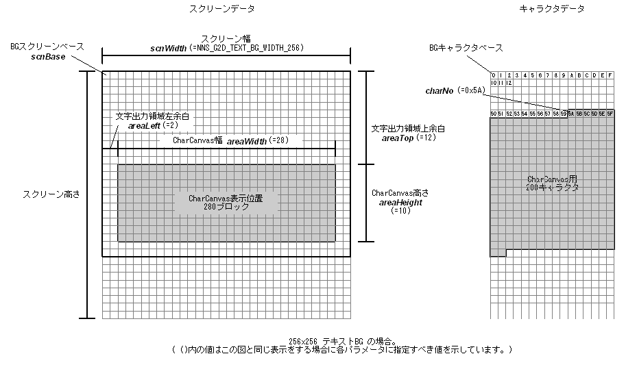

#include <nnsys/g2d/g2d_CharCanvas.h>
void NNS_G2dMapScrToCharText(
void* scnBase,
int areaWidth,
int areaHeight,
int areaLeft,
int areaTop,
NNSG2dTextBGWidth scnWidth,
int charNo,
int cplt
);
| scnBase | [OUT] スクリーンベースへのポインタ。2バイトアライメントされていなければなりません。 |
| areaWidth | [IN] CharCanvas の幅 (キャラクタ単位) |
| areaHeight | [IN] CharCanvas の高さ (キャラクタ単位) |
| areaLeft | [IN] スクリーン左端から CharCanvas 表示位置左端までの幅 (キャラクタ単位) |
| areaTop | [IN] スクリーン上端から CharCanvas 表示位置上端までの高さ (キャラクタ単位) |
| scnWidth | [IN] スクリーンの幅 |
| charNo | [IN] CharCanvas に割り当てられているキャラクタの始点のキャラクタ番号 |
| cplt | [IN] スクリーンに指定するカラーパレット番号 |
なし。
テキストBG 面のスクリーンを CharCanvas を表示できるように設定します。
scnWidth には以下のいずれかを指定します。
| NNS_G2D_TEXT_BG_WIDTH_256 | スクリーン幅が256（スクリーンサイズが256x256または256x512）ピクセル |
| NNS_G2D_TEXT_BG_WIDTH_512 | スクリーン幅が512（スクリーンサイズが512x256または512x512）ピクセル |

2005/09/29 引数のIN/OUT表示を修正
2005/05/25 初版